Computer-Aided Medical Diagnostics (MPA-PRM) · Real-time AI lab · 9 November 2026
Thirteen breathing monitors
In four hours, every team wired a motion sensor to an ESP32-S3, recorded its own data, trained a classifier and got it running on the chip. Here is what you built, what you measured and what you tried next.
calm breathingfast breathingnot attachedshaking
Schematic of the four states the devices had to tell apart, not a recording.
28students in 13 teams
8.9mean points of 10, per team
≈180 minof signal, three teams estimated
≈320recordings, three teams estimated
227commits
What you came up with
Nine teams showed an own extension. These eight are described in their repositories.
MPA-PRM_Real-time_microcontroller
A mouse you steer by tilting
The board pairs with a computer as a standard Bluetooth mouse. Tilt moves the pointer, and a finger tap on the board is a left click, caught as a jump of more than 0.6 g away from the filtered signal.
esp32s3-breathing-monitor
A balloon game on the board's own page
Shake to climb, tilt to steer between the rocks. The game skips the classifier on purpose, because its window and smoothing add 1 to 2 s of lag. It reads a raw activity signal from the last 0.2 s instead.
esp32-breathing-monitor
A sleep position monitor
Motivated by positional sleep apnea: a low-pass filter isolates the gravity vector, and the LED shows back, stomach, left side, right side or upright.
Real-time-AI-on-a-microcontroller---PRM
A monitor that admits it is unsure
The yellow state appears when the top probability is at most 2/3. That threshold comes from a cost argument: a wrong state counts as twice as bad as an admitted doubt, so answering pays only when p − 2(1 − p) > 0.
prm-realtime-ai
Unsure, and honest about faults
Yellow for low confidence or unknown movement, white when the sensor is disconnected or frozen, so the device stops instead of inventing a prediction.
PRM_application_IV_live_cosi
Breaths per minute
A spectral estimate on the chip. The search band had to be widened from 1.0 to 2.5 Hz once the team saw how fast "fast breathing" really was.
StisHik
Breathing rate with a decimal
The interpolated peak of the gyroscope spectrum is shown as a breathing rate with a decimal, and the repository has a metronome-guided recording tool to check it against.
HiJack_breathing
A 3D motion workstation
The board's page shows a 3D model that follows the sensor's orientation, with a calibration button, gravity-compensated acceleration and a recorder built into the page.
Ten bedside monitors
The monitoring stations on GitHub Pages, ten designs for the same job. They were captured with no board connected, so most are waiting for data. The first one is running its team's built-in simulator.
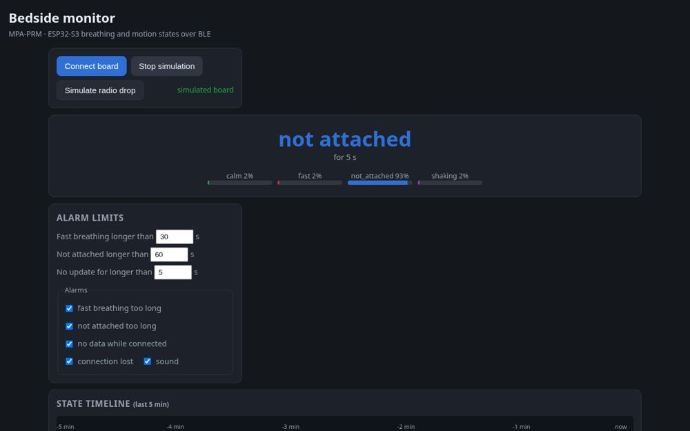
MPA-PRM_Real-time_microcontroller
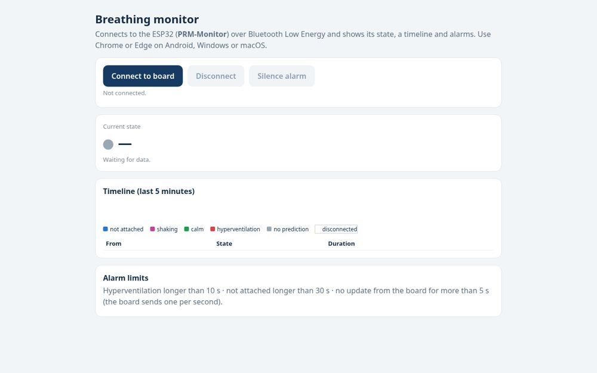
ESP32
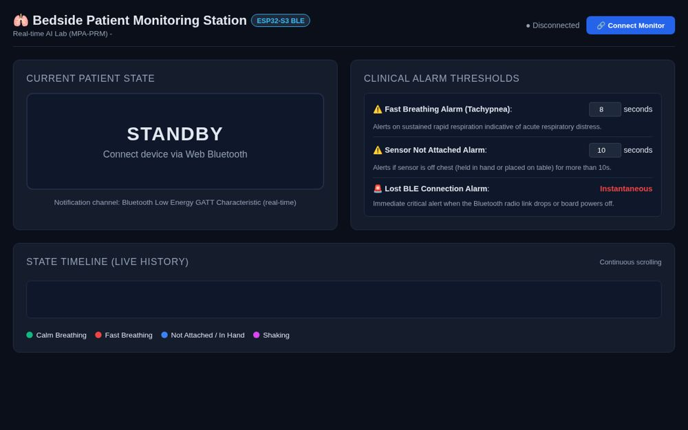
esp32-breathing-monitor
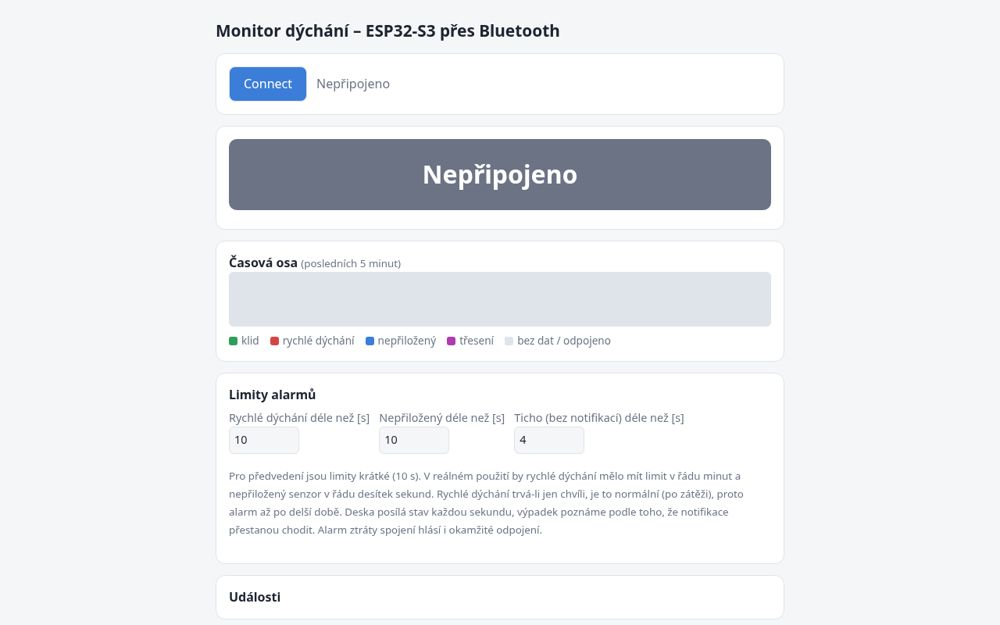
PRM_application_IV_live_cosi
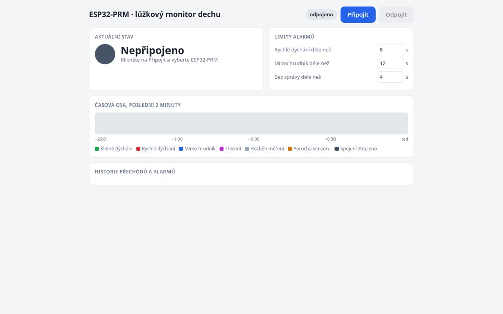
esp32s3-breathing-monitor
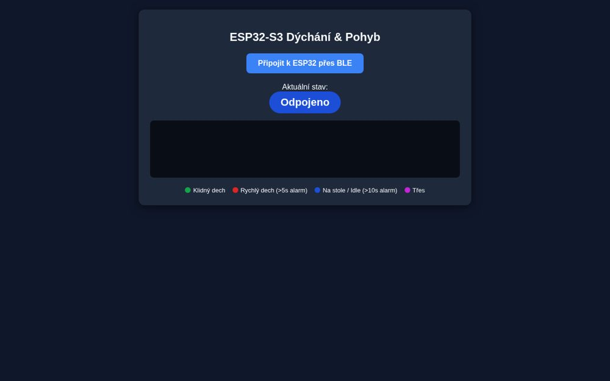
prm-realtime-aiHiJack_breathing
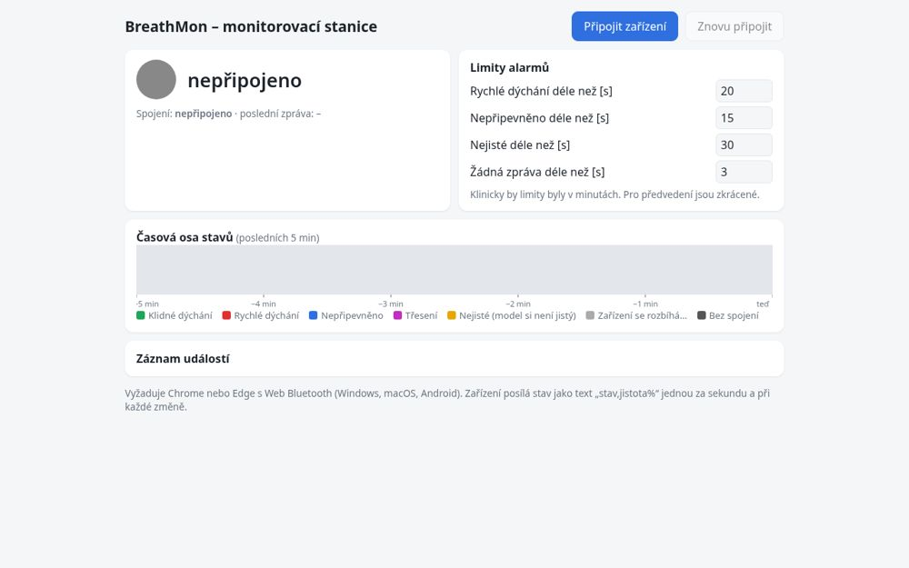
Real-time-AI-on-a-microcontroller---PRM
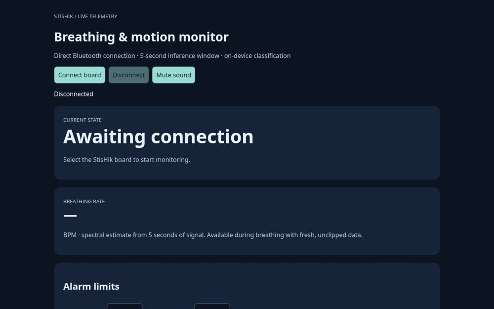
StisHik
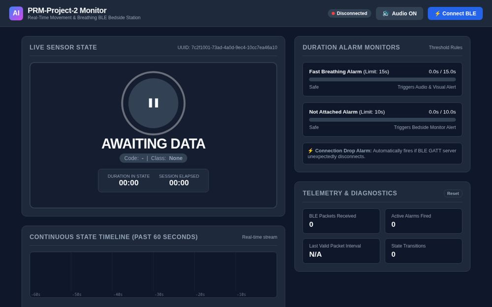
PRM_project_2
Eleven breadboards
The same kit, wired eleven ways. Photos from the teams' documentation, several with the LED caught mid-state.
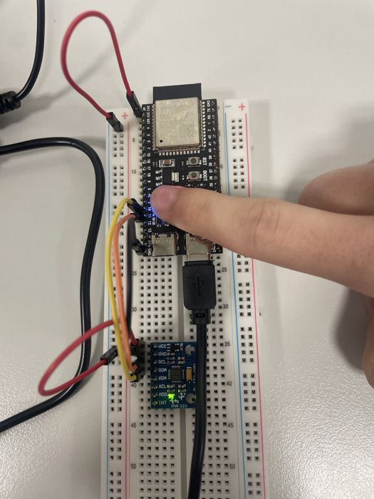
MPA-PRM_Real-time…
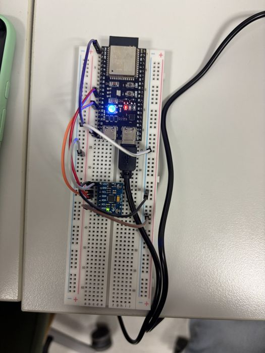
ESP32
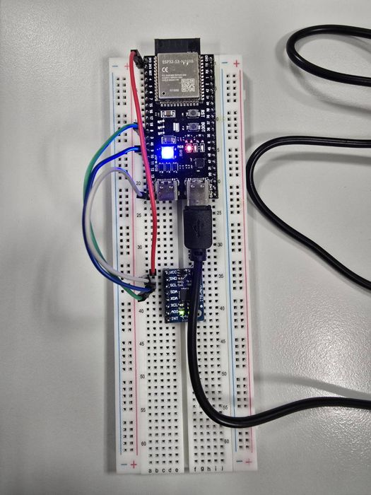
esp32-breathing…
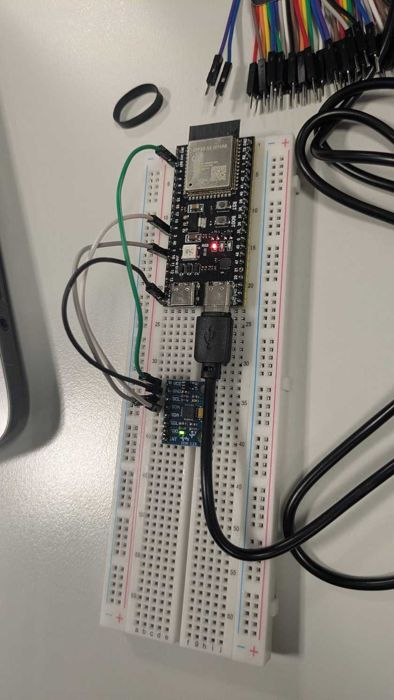
AppII-realtime…
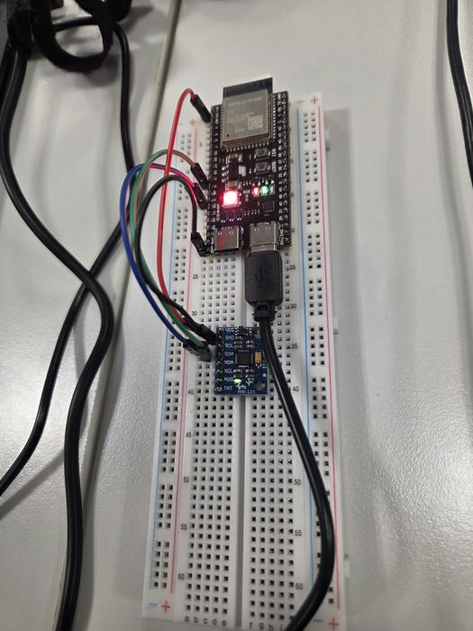
Seiros-RT
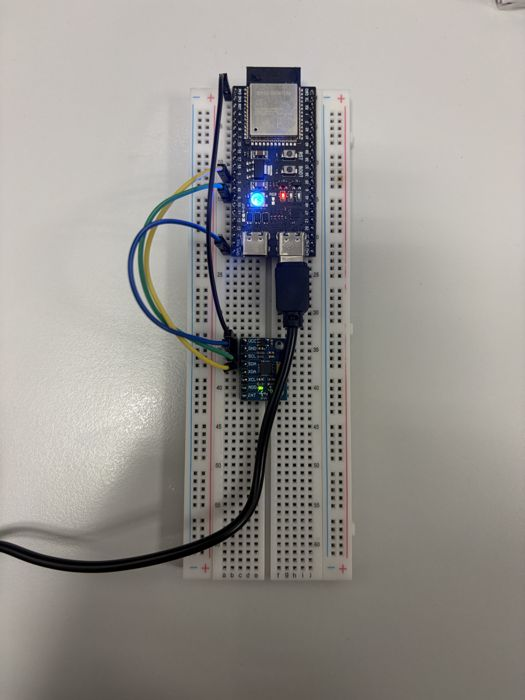
PRM_application_IV…
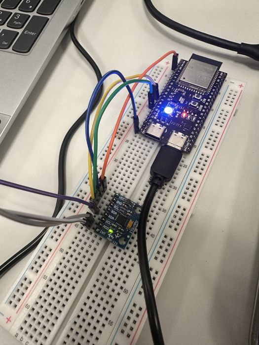
esp32s3-breathing…
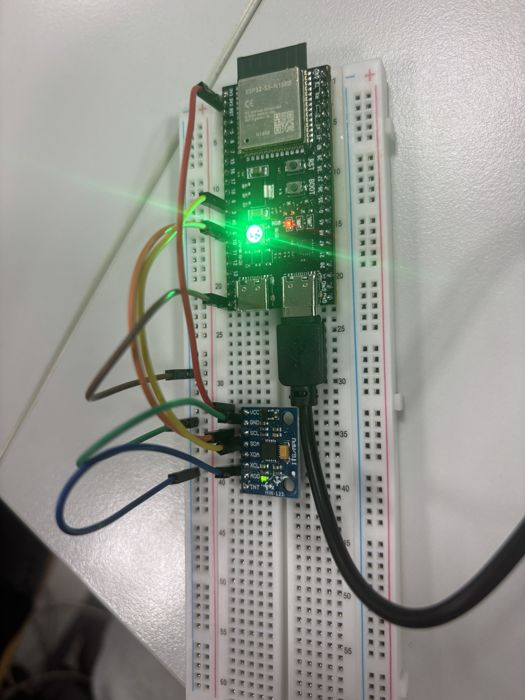
HiJack_breathing
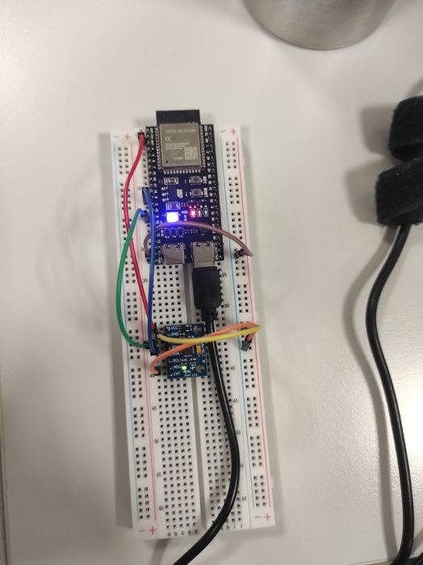
Real-time-AI-on-a…
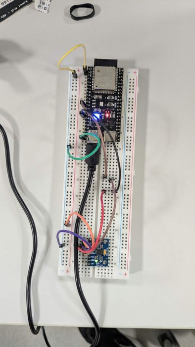
RT-edge
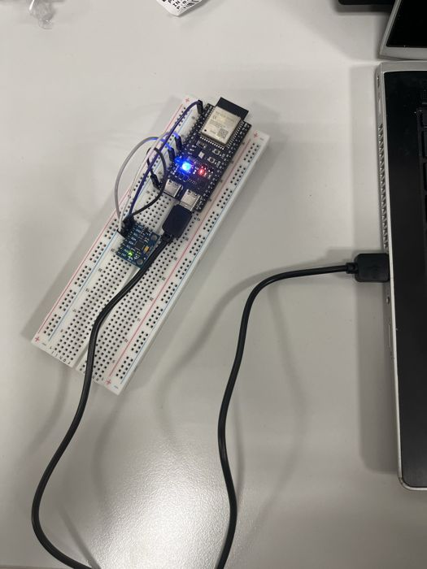
PRM_project_2
Numbers worth quoting
132 /min
The fastest hand-counted breathing: 88 breaths in 40 s. It broke one team's first frequency estimator.
2.4 ms
Fastest reported computation of features and prediction on the chip, against a 500 ms update budget.
1.3 kB
The whole 13-16-4 neural network of one team: 318 parameters.
2.45 million
Accelerometer and gyroscope values in the committed recordings, from 408,975 samples on six axes.
83.5 → 72.9 %
One team's accuracy on training data and then on a completely new recording. This gap is why whole recordings are split before windowing.
1 minute
The time between the commits bug fix and bug fix2.
The afternoon in commits
Commits per half hour during the lab, all teams together. The rush came in the last hour: 38 commits between 16:00 and 16:30.
13:0013:3014:0014:3015:0015:3016:0016:3017:00
The middle line marks 20 commits and the top of the chart is 40. Six of the 227 commits fall outside this window, three of them from the evening before the lab.
How much signal you recorded
Minutes of accelerometer and gyroscope data per team. Paler bars are estimates.
PRM_application_IV…
24.2 min
Real-time-AI-on-a…
21.0 min
esp32s3-breathing…
20.3 min
ESP32
20.2 min
HiJack_breathing
14.0 min
MPA-PRM_Real-time…
≈14 min
AppII-realtime…
≈14 min
StisHik
≈14 min
PRM_project_2
12.0 min
Seiros-RT
11.4 min
esp32-breathing…
7.5 min
RT-edge
6.1 min
prm-realtime-ai
2.8 min
Three teams kept their recordings out of the repository, so they are counted at the mean of the other ten teams: 14 minutes and 24.5 recordings. Measured total of the ten teams: 139.5 minutes and 245 recordings.
What ran on the chip
Eight of the 13 devices ran something other than a neural network, and they did fine. One team compared a network with spectral rules and shipped the rules.
Model on the board
Small neural network
5
Decision tree
3
Logistic regression
2
Random forest
2
Spectral rules
1
Firmware toolchain
PlatformIO
8
Arduino sketch
4
MicroPython
1
AI coding agents
Claude Code
9
OpenAI Codex
4
Antigravity / Gemini
2
Two teams combined two agents, so the counts add up to 15.
Team by team
Repository
Toolchain
Model on the board
AI agent
Recordings
Minutes
MPA-PRM_Real-time_microcontroller
PlatformIO
Small neural network
Claude Code
≈24.5
≈14
ESP32
PlatformIO
Logistic regression
Claude Code
25
20.2
esp32-breathing-monitor
Arduino sketch
Random forest, 8 trees
Antigravity / Gemini
16
7.5
AppII-realtime-edge-devices
Arduino sketch
Neural network 26-16-4
Claude Code
≈24.5
≈14
Seiros-RT
Arduino sketch
Decision tree
Claude Code
12
11.4
PRM_application_IV_live_cosi
Arduino sketch
Logistic regression
Claude Code
64
24.2
esp32s3-breathing-monitor
PlatformIO
Neural network 13-16-4
Codex, Claude Code
31
20.3
prm-realtime-ai
PlatformIO
Decision tree, depth 4
Claude Code
5
2.8
HiJack_breathing
PlatformIO
Small neural network
Codex
42
14.0
Real-time-AI-on-a-microcontroller---PRM
PlatformIO
Small neural network
Claude Code
25
21.0
StisHik
ESP-IDF on PlatformIO
Spectral rules
Codex
≈24.5
≈14
RT-edge
MicroPython
Random forest, 25 trees, as plain if/else
Claude Code
1
6.1
PRM_project_2
PlatformIO
Decision tree
Codex, Antigravity / Gemini
24
12.0
Taken from all branches of the repositories on 10 November 2026. ≈ marks the mean of the other ten teams, used where the recordings are not in the repository. Accuracies are left out on purpose, because every team split its data differently and the figures cannot be compared.